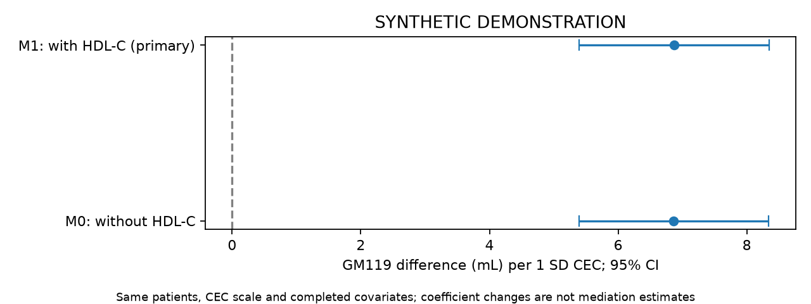

SYNTHETIC DEMONSTRATION — NOT PATIENT RESULTS
四项独立队列；不要求Hcy。患者行和ID仅保存在本地分析目录，不进入本报告。
| step | remaining | excluded_here |
|---|---|---|
| clinical_image_union | 2400 | 0 |
| adult_ischemic_stroke | 2400 | 0 |
| available_true_icv | 2400 | 0 |
| available_gm119_ml | 2400 | 0 |
| available_lesion_ml | 2400 | 0 |
| observed_baseline_cec | 2280 | 120 |
| known_baseline_sample_time | 2280 | 0 |
| analysis | study | tier | family | status | n | outcome_unknown | parameters | imputations | p | statistic | df1 | df2 | method | m | primary_terms | estimate | lower | upper | same_primary_imputations | ratio | ratio_lower | ratio_upper | r | p_bh_secondary |
|---|---|---|---|---|---|---|---|---|---|---|---|---|---|---|---|---|---|---|---|---|---|---|---|---|
| primary | cec | primary | ols | ESTIMATED | 2280 | 0 | 27 | 2 | 7.091e-20 | 83.29 | 1 | 2.365e+11 | Rubin scalar Wald | 2 | cec | 6.869 | 5.394 | 8.344 | NaN | NaN | NaN | NaN | NaN | NaN |
| complete_case | cec | sensitivity | ols | ESTIMATED | 2031 | 0 | 27 | 1 | 6.009e-18 | 74.52 | 1 | inf | Rubin scalar Wald | 1 | cec | 6.966 | 5.385 | 8.548 | NaN | NaN | NaN | NaN | NaN | NaN |
| without_hdl_same_sample | cec | sensitivity | ols | ESTIMATED | 2280 | 0 | 26 | 2 | 7.277e-20 | 83.24 | 1 | 3.622e+11 | Rubin scalar Wald | 2 | cec | 6.865 | 5.391 | 8.34 | True | NaN | NaN | NaN | NaN | NaN |
| white_matter | cec | secondary | ols | ESTIMATED | 2280 | 0 | 27 | 2 | 0.9962 | 2.284e-05 | 1 | 2.041e+08 | Rubin scalar Wald | 2 | cec | 5.449e-05 | -0.02229 | 0.0224 | NaN | NaN | NaN | NaN | NaN | 0.9962 |
| apo_ai_adjusted | cec | secondary | ols | ESTIMATED | 2280 | 0 | 28 | 2 | 6.997e-20 | 83.31 | 1 | 4.883e+12 | Rubin scalar Wald | 2 | cec | 6.869 | 5.394 | 8.344 | NaN | NaN | NaN | NaN | NaN | 2.799e-19 |
| function60 | cec | secondary | multinomial | ESTIMATED | 2132 | 0 | 74 | 2 | 0.008967 | 6.829 | 1 | 7.917e+06 | Rubin scalar Wald | 2 | dependent:cec | -0.1449 | -0.2536 | -0.03623 | NaN | 0.8651 | 0.776 | 0.9644 | NaN | 0.01793 |
| function60_with_gm | cec | secondary | multinomial | ESTIMATED | 2132 | 0 | 76 | 2 | 0.2306 | 1.437 | 1 | 1.342e+07 | Rubin scalar Wald | 2 | dependent:cec | -0.06843 | -0.1803 | 0.04344 | NaN | 0.9339 | 0.835 | 1.044 | NaN | 0.3074 |
| function60_observation_weighted | cec | sensitivity | multinomial | ESTIMATED | 2132 | 148 | 74 | 2 | 0.007387 | 7.176 | 1 | 9.198e+08 | Rubin scalar Wald | 2 | dependent:cec | -0.1464 | -0.2535 | -0.03929 | NaN | 0.8638 | 0.7761 | 0.9615 | NaN | NaN |
| cec_spline | cec | sensitivity | ols | ESTIMATED | 2280 | 0 | 28 | 2 | 6.803e-19 | 41.83 | 2 | 7.902e+11 | D1 pooled multivariate Wald | 2 | cec;cec_rcs | NaN | NaN | NaN | NaN | NaN | NaN | NaN | 1.378e-06 | NaN |
多分类系数取指数表示 P(该状态)/P(独立) 的比值之比，不能标为HR。联合检验显著不代表每个系数都显著。

| analysis | study | tier | family | status | n | outcome_unknown | parameters | imputations | p | statistic | df1 | df2 | method | m | primary_terms | estimate | lower | upper | same_primary_imputations |
|---|---|---|---|---|---|---|---|---|---|---|---|---|---|---|---|---|---|---|---|
| primary | cec | primary | ols | ESTIMATED | 2280 | 0 | 27 | 2 | 7.091e-20 | 83.29 | 1 | 2.365e+11 | Rubin scalar Wald | 2 | cec | 6.869 | 5.394 | 8.344 | NaN |
| without_hdl_same_sample | cec | sensitivity | ols | ESTIMATED | 2280 | 0 | 26 | 2 | 7.277e-20 | 83.24 | 1 | 3.622e+11 | Rubin scalar Wald | 2 | cec | 6.865 | 5.391 | 8.34 | True |
主要模型调整HDL-C；M0使用同一患者、同一套完成数据与固定CEC尺度。仅删除模型中的HDL-C项。比较系数和区间，不以P值一显著一不显著判断模型差异。
| estimate | se | lower | upper | p | df | m | within_variance | between_variance | term | scale |
|---|---|---|---|---|---|---|---|---|---|---|
| 548.6 | 3.212 | 542.3 | 554.9 | 0 | 9169 | 2 | 10.21 | 0.07184 | intercept | difference |
| 6.869 | 0.7527 | 5.394 | 8.344 | 7.091e-20 | 2.365e+11 | 2 | 0.5665 | 7.766e-07 | cec | difference |
| -19.79 | 1.608 | -22.94 | -16.64 | 7.694e-35 | 4.155e+10 | 2 | 2.584 | 8.451e-06 | age | difference |
| -0.5168 | 1.853 | -4.149 | 3.115 | 0.7803 | 7.317e+09 | 2 | 3.434 | 2.676e-05 | age_rcs | difference |
| -1.285 | 1.473 | -4.171 | 1.602 | 0.383 | 4.259e+09 | 2 | 2.169 | 2.216e-05 | sex_2 | difference |
| -0.4195 | 2.129 | -4.593 | 3.754 | 0.8438 | 4.981e+07 | 2 | 4.533 | 0.0004282 | smoking_2 | difference |
| 2.2 | 2.012 | -1.742 | 6.143 | 0.2741 | 1.691e+10 | 2 | 4.046 | 2.074e-05 | smoking_3 | difference |
| -0.06175 | 2.115 | -4.208 | 4.084 | 0.9767 | 1.253e+14 | 2 | 4.475 | 2.665e-07 | smoking_4 | difference |
| -1.337 | 2.138 | -5.527 | 2.853 | 0.5317 | 8.159e+11 | 2 | 4.569 | 3.373e-06 | drinking_2 | difference |
| -0.5255 | 2.057 | -4.558 | 3.507 | 0.7984 | 4.112e+08 | 2 | 4.233 | 0.0001392 | drinking_3 | difference |
| -2.005 | 2.103 | -6.128 | 2.117 | 0.3403 | 5.102e+10 | 2 | 4.423 | 1.305e-05 | drinking_4 | difference |
| -2.065 | 1.474 | -4.954 | 0.8237 | 0.1612 | 3.657e+04 | 2 | 2.161 | 0.007572 | hypertension_2 | difference |
| 2.353 | 1.469 | -0.5269 | 5.233 | 0.1093 | 2.218e+07 | 2 | 2.159 | 0.0003056 | diabetes_2 | difference |
| 1.023 | 1.47 | -1.859 | 3.905 | 0.4864 | 3.088e+08 | 2 | 2.162 | 8.201e-05 | prior_stroke_2 | difference |
| 0.1106 | 0.2393 | -0.3585 | 0.5797 | 0.6439 | 9372 | 2 | 0.05667 | 0.0003943 | bmi | difference |
| 5.117 | 2.383 | 0.4393 | 9.796 | 0.03207 | 845.6 | 2 | 5.485 | 0.1302 | education_2 | difference |
| 2.007 | 2.328 | -2.559 | 6.573 | 0.3888 | 1654 | 2 | 5.287 | 0.08884 | education_3 | difference |
| 4.716 | 2.378 | 0.01914 | 9.413 | 0.04909 | 157.3 | 2 | 5.204 | 0.3006 | education_4 | difference |
| 0.7543 | 2.373 | -3.905 | 5.414 | 0.7507 | 715.2 | 2 | 5.423 | 0.1404 | education_5 | difference |
| -4.026 | 2.622 | -9.174 | 1.122 | 0.1251 | 752.2 | 2 | 6.627 | 0.1672 | cysc | difference |
| -0.3413 | 1.284 | -2.858 | 2.176 | 0.7904 | 1.363e+11 | 2 | 1.649 | 2.979e-06 | ldl | difference |
| 0.02977 | 1.314 | -2.546 | 2.606 | 0.9819 | 2.374e+05 | 2 | 1.724 | 0.002364 | tg | difference |
| -0.2018 | 1.608 | -3.353 | 2.95 | 0.9001 | 2.498e+10 | 2 | 2.586 | 1.091e-05 | prior_statin_1 | difference |
| -0.2362 | 0.3608 | -0.9433 | 0.471 | 0.5128 | 6.652e+06 | 2 | 0.1301 | 3.365e-05 | sample_day | difference |
| -0.9716 | 1.213 | -3.348 | 1.405 | 0.423 | 2.652e+06 | 2 | 1.469 | 0.0006019 | lesion_ml | difference |
| -0.1519 | 0.8473 | -1.813 | 1.509 | 0.8577 | 5.862e+08 | 2 | 0.7179 | 1.977e-05 | icv_ml | difference |
| -0.8362 | 2.937 | -6.593 | 4.921 | 0.7759 | 4.232e+08 | 2 | 8.628 | 0.0002796 | hdl | difference |
完成模型 2；参数数 27；最大设计条件数 4.26。完整诊断见 fit_diagnostics.json。
缺失处理依赖MAR假设。功能状态图为固定访视结局的标准化概率，不是首次失能的累积发生率。血压分析是实测血压的条件关联。次要分析报告研究内BH-FDR；总汇报另列本版固定四项Holm校正。